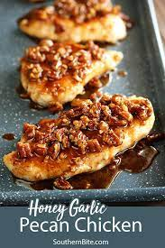

Pecan Honey Glazed Fried Chicken

Description
Nothing says 'south' like good fried chicken, but when pecan honey glaze is drizzled on top then it takes it to a whole new level. I was inspired when my husband and I visited a soul food restaurant, and I just had to come home and duplicate it. I must admit I think I hit the nail on the head - at least my family admits it. Enjoy!
Ingredients
- 1 quart peanut oil for frying, or as needed
- 1 whole whole chicken, cut into 8 pieces
- 1 teaspoon seasoned salt, or to taste
- 2 eggs, beaten
- 2 cups self-rising flour
- 1 pinch salt and ground black pepper to taste
- 1 cup butter
- ½ cup honey
- 1 cup chopped pecans
Steps
- Heat peanut oil in deep skillet or deep-fryer to 375 degrees F (190 degrees C). Oil should be deep enough to cover chicken pieces halfway.
- Season chicken pieces on all sides with seasoned salt.
- Put beaten eggs in a large bowl. Mix flour, salt, and black pepper in a large paper bag.
- Dip seasoned chicken into beaten egg; place each piece into bag containing seasoned flour and shake to coat.
- Cook chicken in hot oil until no longer pink at the bone and the juices run clear, about 10 minutes per side. An instant-read thermometer inserted into the thickest part of the thigh near the bone should read 165 degrees F (75 degrees C). Transfer chicken to a plate lined with paper towels to drain.
- Melt butter in saucepan over medium heat. Whisk honey into melted butter; cook, whisking occasionally, until bubbles start to form, about 5 minutes. Reduce heat to low; simmer another 10 minutes. Fold pecans into butter mixture; cook until the pecans are hot, 2 to 3 minutes. Drizzle over hot chicken pieces to serve.